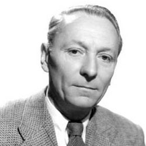

| Home The Doctors The Companions The Villains Show History |
William HartnellWilliam Henry Hartnell (8 January 1908 – 23 April 1975) was an English actor. Hartnell played the first incarnation of the Doctor in Doctor Who, from 1963 to 1966. |
|
Katie Hyche |
Ann Marie Skjold |
Content derived from the Doctor Who Wikipedia Page. |